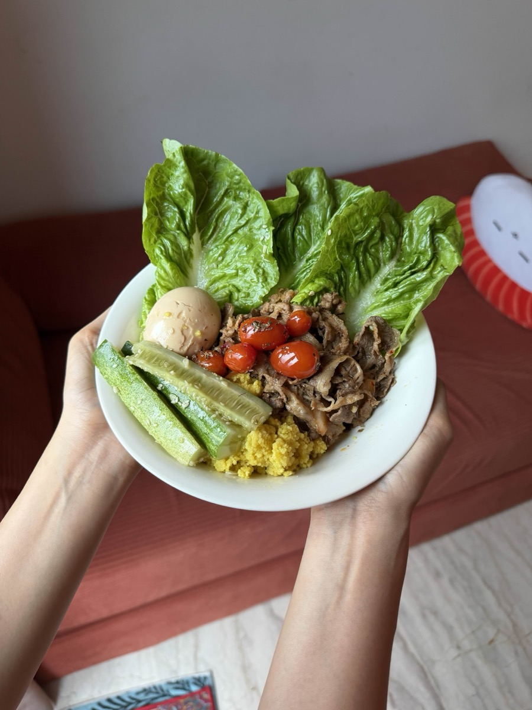

Mix the marinade. Combine soy sauce, mirin, sesame oil, lime juice, grated garlic, grated red onion, smoked paprika, and chili powder in a bowl. Stir until combined.
Slice the beef. Cut into 3–4cm pieces. Against the grain if possible.
Get your pan screaming hot. No oil. High heat. Wait until you can feel the heat rising from the pan surface.
Sear the beef. Add beef in small batches. Do not touch for 45 seconds — let the edges char. Flip, 30 more seconds.
Add the marinade. Pour the marinade over the beef, toss everything for 1–1.5 minutes until the sauce is glossy and coats every piece.
Remove immediately. Do not overcook. The residual heat continues to cook it after it leaves the pan.
"Pan must be screaming hot before the beef goes in. That sizzle = caramelization. Do not overcrowd the pan — cook in small batches for best results."